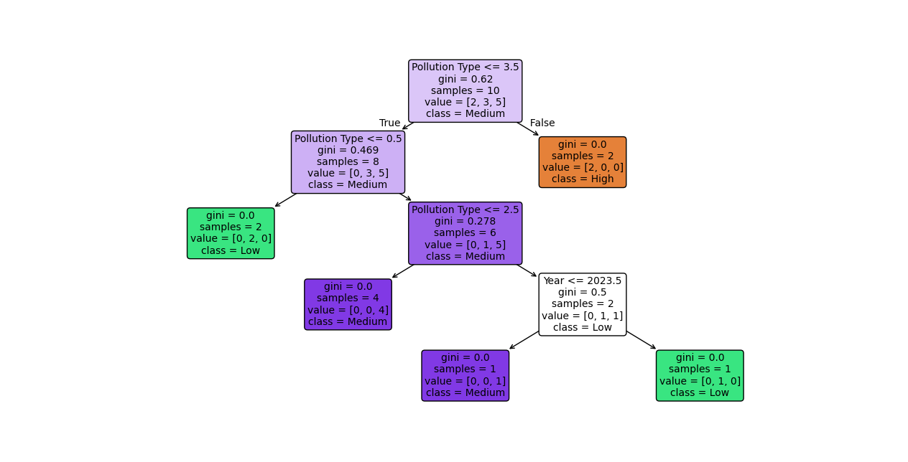
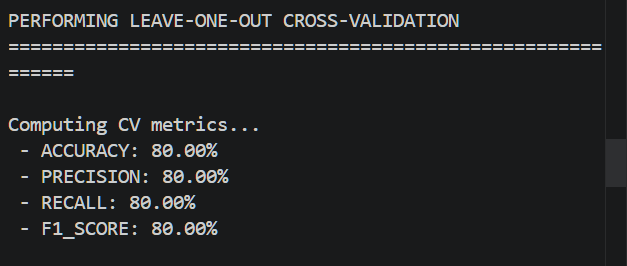
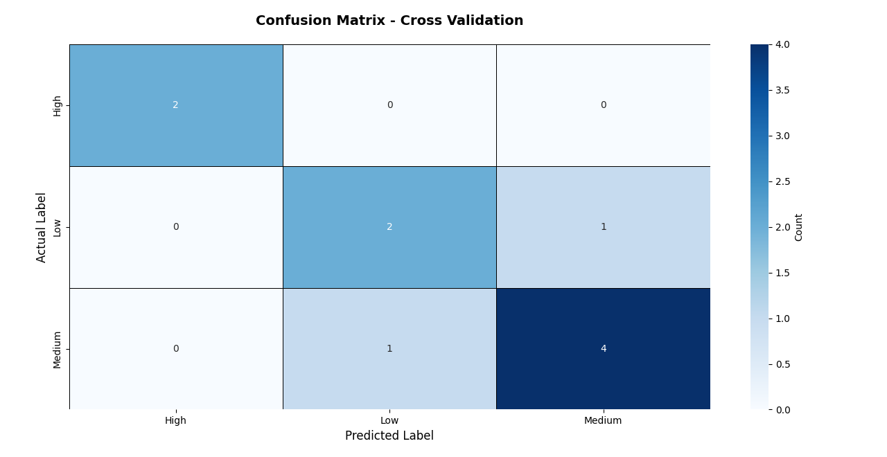

A Comprehensive Explainable AI (XAI) framework to support decision-making and improve urban quality of life.
Functional: Input percentage data, Preprocessing/cleaning, Risk classification (Low, Med, High), Ranking pollution, Visualizing results (tables/charts), Providing recommendations.
Non-Functional: Reliable accuracy, Clear outputs, Ability to update/extend to other cities, Fast processing, Simple/user-friendly design.
dropna()) to ensure the model learns only from 100% authentic records.Local Storage (Excel) → Processing Layer (CLI) → ML Model (Decision Tree) → Results



Any Questions or Feedback?